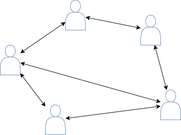
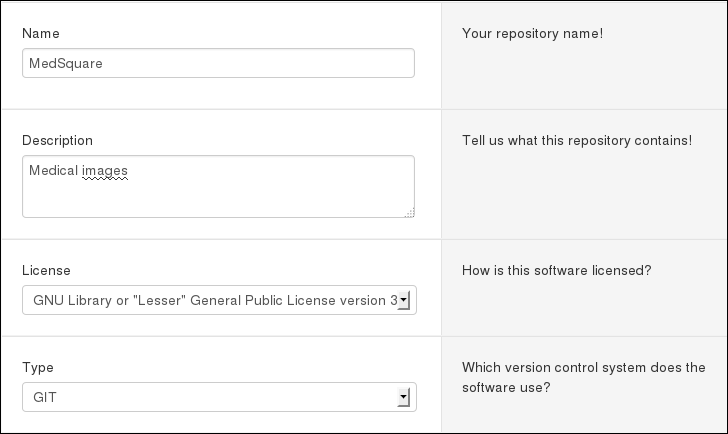
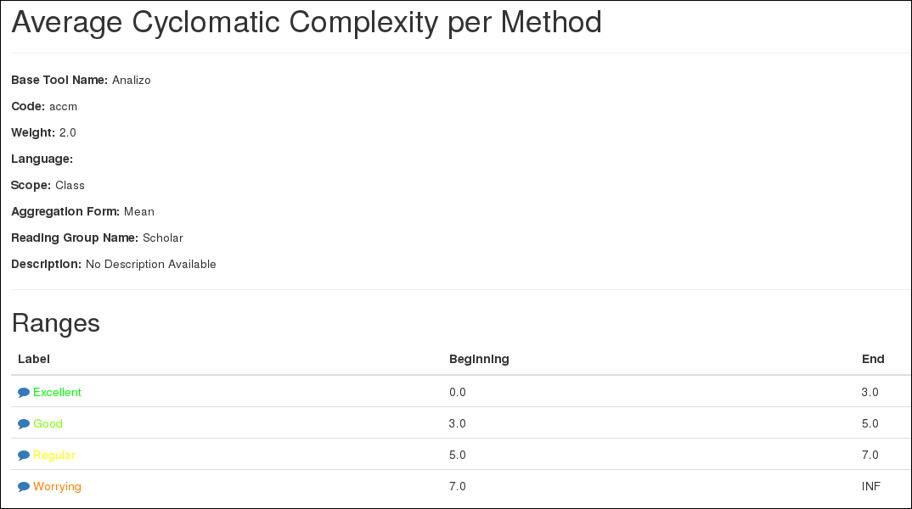
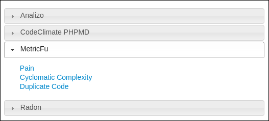

Your browser doesn't support the features required
by impress.js, so you are presented with a simplified version of
this presentation.
For the best experience please use the latest Chrome,Safari
or Firefox browser.
Mezuro:
Understanding source code metrics
Dylan Guedes, Paulo Meirelles (UnB)
Rafael Manzo, Diego Camarinha (USP)
Internal Quality...
The ease of development and maintenance of a software is directly related with its source code quality.
We can use source code metrics...
Static source code metrics are measures extracted from the code without compiling or running it.
Several tools can be used to extract source code metrics...
- metric_fu (Ruby)
- Radon (Python)
- Analizo (Java, C and C++)
What is the problem?
Code metric tools, in general, do not present a friendly interface, and, even more, do not follow a standard.
we are working on *
mezuro*
What we want?
- Help developers to understand and feel comfortable using source code metrics
- Results are public and the "interpretation" is shared by the community

Creating a Mezuro project...

Configuring thresholds and interpretation...

Before, we choose a metric collector...

Our Architecture

*Ellipses represents softwares involved*parallelograms the communication interfaces between them
Other platforms
- SonarQube: its best plugins are paid and closed source, such as the C/C++ analyzer
- CodeClimate: its polished front-end is not FOSS